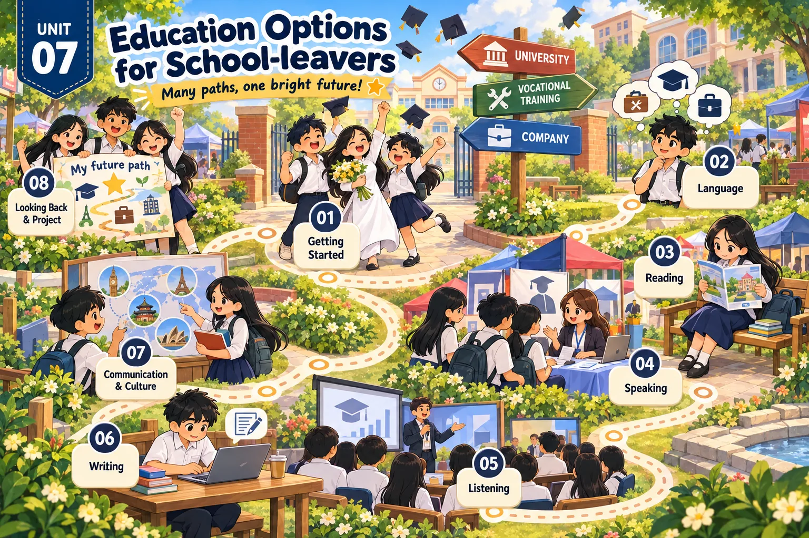

Lesson 1 · Getting started — Planning our education Lesson 2 · Language — Pronunciation · Vocabulary · Grammar Lesson 3 · Reading: Study options after leaving school Lesson 4 · Speaking: Vocational training and academic study Lesson 5 · Listening: Courses at a vocational school Lesson 6 · Writing: A request letter about vocational courses Lesson 7 · Communication and Culture: UK education after secondary school Lesson 8 · Looking back and Project: Research on an educational institutionĐã dựng: Lessons 1–8. Tất cả 8 tiết Unit 7 đã có bài giảng.